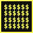
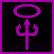
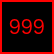
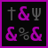
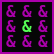
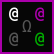
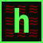
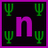

Achievements for UnNetHack
There are 91 achievements tracked for UnNetHack in the Junethack tournament.
ascended
entered Astral Plane
entered Elemental Planes
obtained the Amulet of Yendor
performed the Invocation Ritual
obtained the Book of the Dead
 obtained the Bell of Opening
obtained the Bell of Opening
 obtained the Candelabrum of Invocation
obtained the Candelabrum of Invocation
 entered Gehennom
entered Gehennom
 defeated Medusa
defeated Medusa
 obtained the luckstone from the Mines
obtained the luckstone from the Mines
obtained the Sokoban Prize
 escaped in celestial disgrace
escaped in celestial disgrace
Assault on Fort Knox (defeated Croesus)
Hoarder (ascended carrying all the invocation items)
ascended without writing Elbereth
Too good for Vladbanes (ascended without defeating Vlad)
 Too good for quests (ascended without defeating the quest nemesis)
Too good for quests (ascended without defeating the quest nemesis)
Too good for... wait, what? How? (ascended without defeating Rodney)
 consulted the Oracle
consulted the Oracle
 entered a shop
entered a shop
entered a temple
entered Sokoban
entered the Gnomish Mines
entered Mine Town
 entered the Big Room
entered the Big Room
entered the Town
 entered Fort Ludios
entered Fort Ludios
 entered Quest Home
entered Quest Home
 entered Moria
entered Moria
 entered the Dragon Caves
entered the Dragon Caves
entered Sheol
 entered Vlad's tower
entered Vlad's tower
entered the Blackmarket
got an Oracle consultation
 Mini-Croesus (finish a game with at least 25,000 gold pieces)
Mini-Croesus (finish a game with at least 25,000 gold pieces)
 Better than Croesus (finish a game with at least 200,000 gold pieces)
Too good for a brain (ascended without defeating Cthulhu)
 Heaven or Hell (ascend in 1 HP mode)
 ascended in marathon mode
 You Are War! (defeated Death, Famine, and Pestilence)
 Demonbuster (defeated all demon lords and princes)
Viel Feind', viel Ehr' (defeated all Quest nemeses)
 You already know the way (defeated all Quest leaders)
defeated Death
 defeated Famine
defeated Famine
 defeated Pestilence
defeated Pestilence
 defeated Cthulhu
 defeated the Wizard of Yendor
defeated the Wizard of Yendor
 No membership card (defeated One-Eyed Sam)
No membership card (defeated One-Eyed Sam)
 Make War Not Love (defeated Aphrodite)
defeated Vlad the Impaler
 No Further Knowledge Required (defeated the Oracle)
No Further Knowledge Required (defeated the Oracle)
 defeated the Executioner
defeated the Executioner
defeated Durin's Bane
 defeated the Watcher in the Water
defeated the Watcher in the Water
defeated Asmodeus
 defeated Baalzebub
defeated Baalzebub
defeated Demogorgon
defeated Dispater
 defeated Geryon
defeated Geryon
defeated Juiblex
 defeated Orcus
defeated Orcus
defeated Yeenoghu
defeated Lord Carnarvon, the Archeologist quest leader
 defeated Pelias, the Barbarian quest leader
defeated Pelias, the Barbarian quest leader
defeated Shaman Karnov, the Caveman quest leader
 defeated Robert the Lifer, the Convict quest leader
defeated Robert the Lifer, the Convict quest leader
defeated Hippocrates, the Healer quest leader
 defeated King Arthur, the Knight quest leader
defeated King Arthur, the Knight quest leader
defeated Grand Master, the Monk quest leader
defeated the Arch Priest, the Priest quest leader
defeated Orion, the Ranger quest leader
defeated the Master of Thieves, the Rogue quest leader and Tourist quest nemesis
defeated Lord Sato, the Samurai quest leader
defeated Twoflower, the Tourist quest leader
defeated Norn, the Valkyrie quest leader
defeated Neferet the Green, the Wizard quest leader
defeated the Minion of Huhetotl, the Archeologist quest nemesis
 defeated Thoth Amon, the Barbarian quest nemesis
defeated Thoth Amon, the Barbarian quest nemesis
defeated Tiamat, the Caveman quest nemesis
 defeated Warden Arianna, the Convict quest nemesis
defeated Warden Arianna, the Convict quest nemesis
defeated Cyclops, the Healer quest nemesis
 defeated Ixoth, the Knight quest nemesis
defeated Ixoth, the Knight quest nemesis
defeated Master Kaen, the Monk quest nemesis
 defeated Nalzok, the Priest quest nemesis
defeated Nalzok, the Priest quest nemesis
defeated Scorpius, the Ranger quest nemesis
defeated the Master Assassin, the Rogue quest nemesis
 defeated Ashikaga Takauji, the Samurai quest nemesis
defeated Ashikaga Takauji, the Samurai quest nemesis
defeated Lord Surtur, the Valkyrie quest nemesis
defeated the Dark One, the Wizard quest nemesis